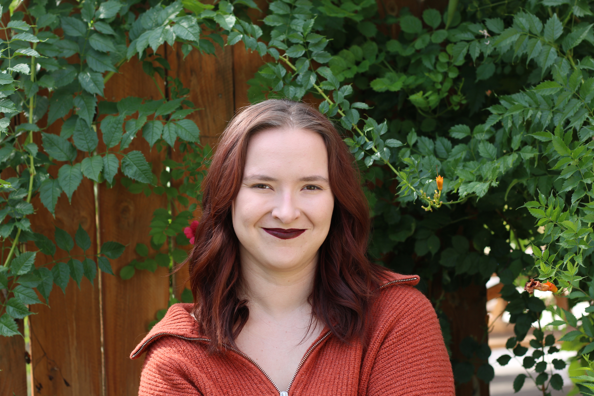

Artist Statement
My paintings of constructed interior scenes are initially collaged using AI-generated images from Stable Diffusion, Midjourney, DALL·E 2, and Adobe Firefly. Combining traditional oil painting with constantly developing technology allows a merging of universal and personal perspectives. Cinematic lighting and an absence of figures invite the viewer into a quiet moment of temporal displacement. These ambiguous spaces with oversaturated colors waver between dream and memory, pointing to the layered, multifaceted emotions involved in fading memory and the ongoing process of learning to live with trauma. Raised in a household where visibility often meant vulnerability, my pieces also reflect a desire for peace and autonomy, spaces untouched by external factors.
Biography
Alex Renbarger (b.1999) specializes in painting isolated interior scenes with intense lighting and vivid colors, based on AI-generated images. She received an MFA in painting and drawing from the University of Nebraska-Lincoln after earning a BFA in studio art from Texas State University.
Select solo exhibitions include What Remains When Memory Fades at the Lux Center for the Arts in Lincoln, NE; Artificial Interiors at Eisentrager-Howard Gallery, Lincoln, NE; and The Artist’s Studio at Spellerberg Projects Main St. Gallery in Lockhart, TX.
Select group shows include Small Works at Blanden Memorial Art Museum, Fort Dodge, IA; Nice;03, Annual National Juried Exhibition at Midwest Nice Art, Aberdeen, SD; Tender and Substance, I Like Your Work; Graduate Juried Exhibition at the University of Mississippi, Oxford, MS; UARK x UNL Exchange Exhibition, Sugar Gallery, Fayetteville, Arkansas; and Illusions of Reverie at Texas State University, San Marcos, TX.
CV
Download CV